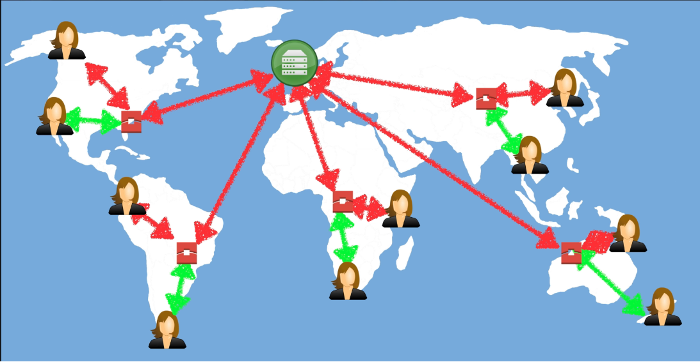

AWS CloudFront
Amazon’s Content Delivery Network.
What is a CDN?
A content delivery network (CDN) is a system of distributed servers (network) that deliver webpages and other web content to a user based on the geographic locations of the user, the origin of the webpage, and a content delivery server.
CloudFront focused on Content Delivery. Transfer Acceleration is about Faster Uploads into S3.
- Edge locations are a collection of servers in a geographically dispersed data centers.
- These are used by CloudFront to keep a cache of your content.
- Instead of requesting data from your main server, its requested from the edge location which is geographically closer to the user.
- The edge location forwards request on to your main server, then caches them locally.
- Next time the user or another user requests the object, they get it directly from the edge location. This greatly reduces the load time of your content.
- After set period of time (TTL) the objects are automatically cleared form the edge location caches.
- You can clear objects in caches yourself i.e. if file is updated to ensure users get latest version but you will be charged.

Key Terminology
- Edge Location - location where content is cached and can also be written. Separate to an AWS Region/AZ. More Edge Locations than Regions!
- Origin - This is the origin of all the files that the CDN will distribute. Origins can be an S3 Bucket, an EC2 Instance, an Elastic Load Balancer, or Route53
- Distribution - This is the name given the CDN, which consists of a collection of Edge Locations.
- Web Distribution - Typically used for Websites
- RTMP - used for Media Streaming (Real Time Messaging Protocol)
What is CloudFront?
Amazon CloudFront can be used to deliver your entire website, including dynamic, static, streaming and interactive content using a global network of edge locations. Requests for your content are automatically routed to the nearest edge location, so content is delivered with the best possible performance.
e.g. Can be used to optimize performance for users accessing a website backed by S3.
Amazons CloudFront is optimized to work with other AWS Service i.e. S3, EC2, ELB, Route53. CloudFront also works seamlessly with any non-AWS origin server, which stores the original, definitive versions of your files.
CloudFront Distribution Types
- Web Distribution - Used for Websites, HTTP/HTTPS (can’t serve adobe flash)
- RTMP Distribution - (Adobe Real Time Messaging Protocol) Used for Media Streaming / Flash multi-media content
Transfer Acceleration
Amazon S3 Transfer Acceleration enables fast, easy, and secure transfers of files over long distances between your end users and an S3 bucket.
Transfer Acceleration takes advantage of CloudFront’s globally distributed edge locations. As the data arrives at an edge location, data is routed to Amazon S3 over an optimized network path.
CloudFront Exam Tips
- Edge Location - where content will be cached. Separate to an AWS Region/AZ.
- Origin - origin of all files that CDN will distribute. May be S3, EC2, ELB, Route53
- Distribution - name given the CDN, which consists of a collection of Edge locations
- Web Distribution - Typically used for websites
- RTMP - Used for Media Streaming
- Edge locations are not just READ only - you can WRITE to them too (i.e. PUIT an object on to them)
- CloudFront Edge Locations are utilised by S3 Transfer Acceleration to reduce latency for S3 uploads.
- Objects are cached for the life of the TTL (Time To Live)
- You can clear cached objects, but you will be charged.
CloudFront Lab
Options to know about when Creating CloudFront Distribution.
Origin Settings
- Origin Domain Name (of S3/LoadBalancer/EC2/Route53)
- Origin Path (folders within origin)
- Restrict Bucket Access (enforce all access via CloudFront - unable to access via S3 -> also need Origin Access Identity)
- Grant Read Permissions on Bucket -> Yes, Update Bucket Policy (defaults to No)
Default Cache Behaviour Settings
- Viewer Protocol Policy (can restrict redirect http -> https)
- Allowed HTTP Methods (GET, HEAD, OPTIONS, PUT, POST, PATCH, DELETE)
- Minimum TTL (min time in seconds to stay in CloudFront cache)
- Maximum TTL (365 days)
- Default TTL (24 hours - may be too short depending how frequently you update content)
- Restrict Viewer Access (Use Signed URLs or Signed Cookies -> useful for paid content restriction)
Distribution Settings
- Web Application Firewalls (WAF) - Protects at Application Layer
- Can add your own Domain Name for CloudFront (CNAMEs)
- SSL Certificates (required for http -> https, can use custom cert)
- Supported HTTP Versions
- Enable IPv6
Takes Approx 15-20 minutes to setup CDN due to setup Edge Locations (around 100+ in 25 countries).
- In CDN General - Get Domain Name to access the CDN.
- In CDN Restrictions - you can maintain whitelist or blacklist for certain countries.
- In CDN Invalidations - removes objects from ClouldFront caches -> i.e. to manually remove objects from caches (charged fee).